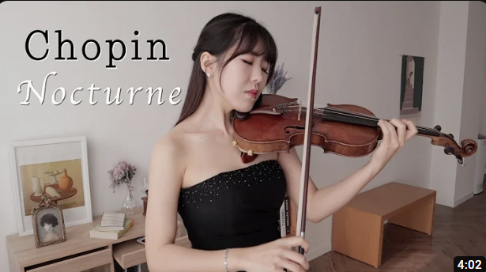
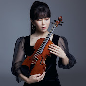
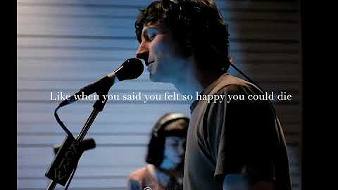
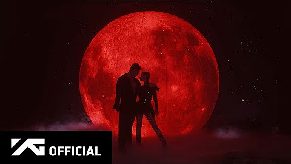

study with me live pomodoro | 12 hours
96 K views . 2 years ago


study with me live pomodoro | 12 hours
674 K views. 3 years ago

Gotye performing "Somebody That I Used To Know" Live on KCRW
91 M views. 12 year ago


JENNIE - ‘You & Me’ DANCE PERFORMANCE VIDEO
145 M views. 6 month ago

Siz Evrime Neden Karşısınız?
505K views. 1 month ago


Vivaldi Four Seasons: Winter (L'Inverno), original version. Freivogel & Voices of Music RV 297 4K
57 M views. 8 years ago